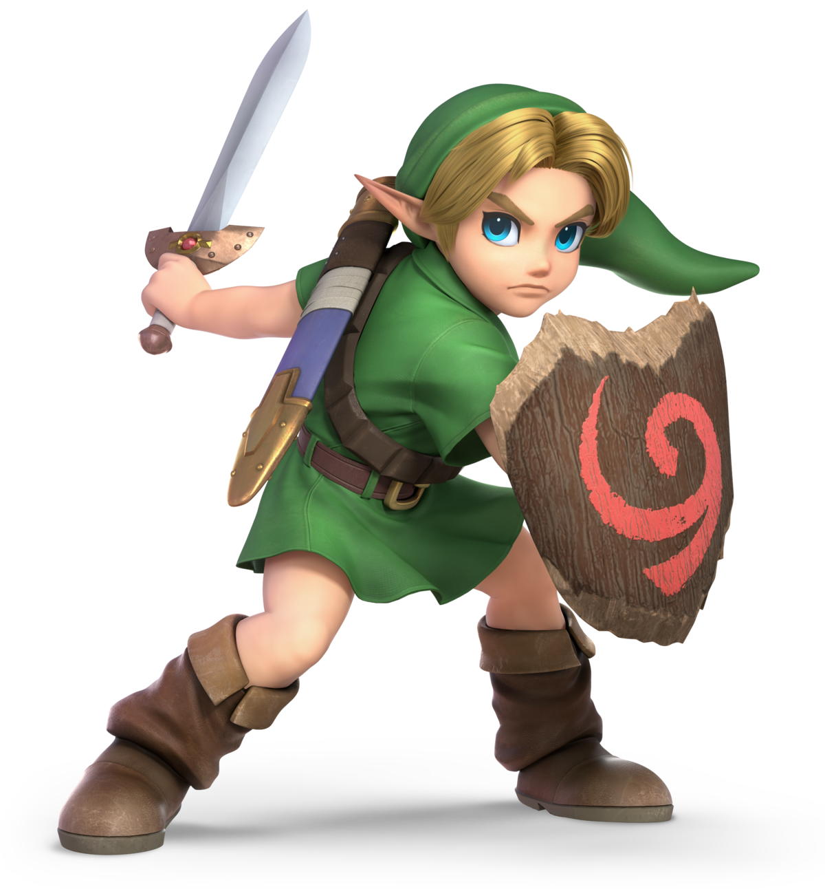
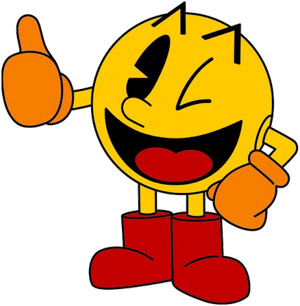

What games were most popular from 2000-2020?
If you're a gamer, you are sure to know that there have been many games made over the years. Some you may have come to cherish and play all the time, or the ones that you play once and never come back to. There are multiplayer games to singleplayer games. But in all, they all are for fun and entertainment.Some people may wonder how games have changed over the years and which games of each decade were the ones to stand above the rest. If that is a question you have aswell, then you can read through this page and find your answer here! 😃
🎮 A brief history of games 🎮
The first video game (which is not pong) to be made was by a physicist named William Higimbotham in 1958. Higimbotham created a game called "Tennis for Two". This game had two people on diffrent controllers and there was a moving ball on the screen. Each player has a line that bounces the ball over which looks like a tennis court net. The ball would fly over and each player had the chance to hit it. You can learn more about it and the creator here.
1.⚡ Pokémon ⚡
Pokémon is a game that is treasured by many because of it's strategic and cute game. Surprisingly, it has been around since 1996 in which the franchise became to grow. it was made by Satoshi Tajiri which wrote the game. The game consists of small monsters that would fight each other with their own special elements such as earth, fire, wind, water, etc. This game became popular in Japan at first on consoles like the Game Boy. Now, So many years after it's release, many games have been made of Pokémon and continue with a new generation of Pokéball throwing and Pokémon battles.

2. 🍄 Super Mario 🍄
Some people may not know it, But the Mario we knoe today didn't start out that way.This all began from the creation of "Jumpman" (The name before Mario) was created by Shigeru Miyamoto and his team of game developers.There were also other characters such as Luigi which was Mario's brother, Donkey Kong, etc. The game was released on September 13, 1985 and became one of the most popular franchises. This game also kicked in more inspired games that would also help some other games strive. It also has many games still being produced for the new generation.

3. ⚔️ The Legend of Zelda ⚔️
Shigeru Miyamoto is at it again with another one of the most popular games. This game has also had to start off somewhere with it's base game which was people being able to make their own dungeons. They had the ability to explore in them. But, This idea was scraped and change everything which would soon make TLOZ a big hit. This would be the adventures of an elf knight, Link, on a journey to save the princess, Zelda, from the villan. The first game of this series was created on February 21st, 1986. Soon after, more games would be in production and would be released on many game consoles.

4. 🍒 Pacman 🍒
Pacman is the little yellow ball that chomps on yellow pellets and fruit and avoids all of the ghosts until he gets a Super pellet. That doesn't seem like too much for the title of a "Popular game", But, This deserves it. This game was also made in Japan because thats where most of these games were created. It came out on May 21, 1980. Other games were also released because of Pacman as arcade games. Pacman could be played from an authetic arcade machine or just from a keyboard.
